Large language models (LLMs) operate in two fundamental learning modes: fine-tuning (FT) and in-context learning (ICL). FT simulates a closed-book exam — the model updates its parameters on training data. ICL simulates an open-book exam — the model reads examples directly from its prompt without any parameter update. Both modes are widely used in practice, yet natural questions remain open: which mode yields greater language proficiency, and do the two modes differ in their inductive biases?
Prior studies have yielded mixed and inconclusive answers, largely due to inconsistent experimental setups. Our ACL 2026 paper addresses this with a principled framework that satisfies three explicit desiderata for a fair comparison.
Comparing FT and ICL is harder than it looks. Three challenges tend to invalidate the comparison:
We address all three by proposing formal language learning as the testbed.
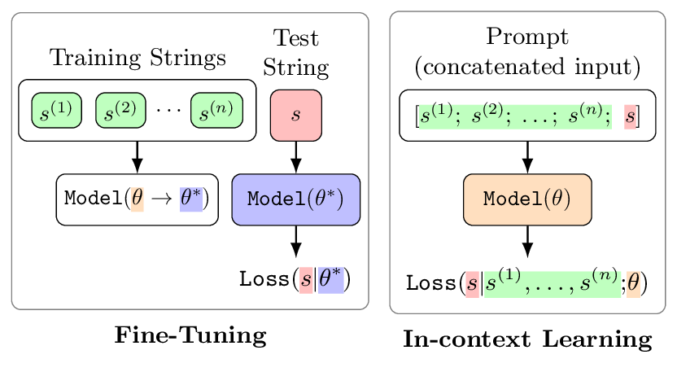
Figure 1. Under equal data, FT updates model parameters $\theta \rightarrow \theta^*$ on training strings and evaluates generation loss on a test string under the updated parameters. ICL keeps parameters fixed at $\theta$ and concatenates training strings as a prefix. Since both the parameters and input format differ, a direct comparison of generation loss is infeasible — motivating the discriminative test.
A probabilistic formal language is a distribution of strings defined by a grammar, and therefore is suitable for studying probabilistic generators like LLMs. Formal languages give us something natural language datasets cannot:
We use hierarchical probabilistic context-free grammars (HPCFGs), which mimic the recursive structure of natural languages. An LLM receives training strings and must learn to generate new strings by recognizing the underlying syntactic patterns — without any natural language instruction.
The grammar. Each language is defined by an HPCFG with hierarchical production rules. Starting from a start symbol $S$, the grammar recursively expands non-terminals (shown in red) until reaching terminal tokens — the alphabet of the language (shown in teal). Each rule fires with a given probability (shown in blue).
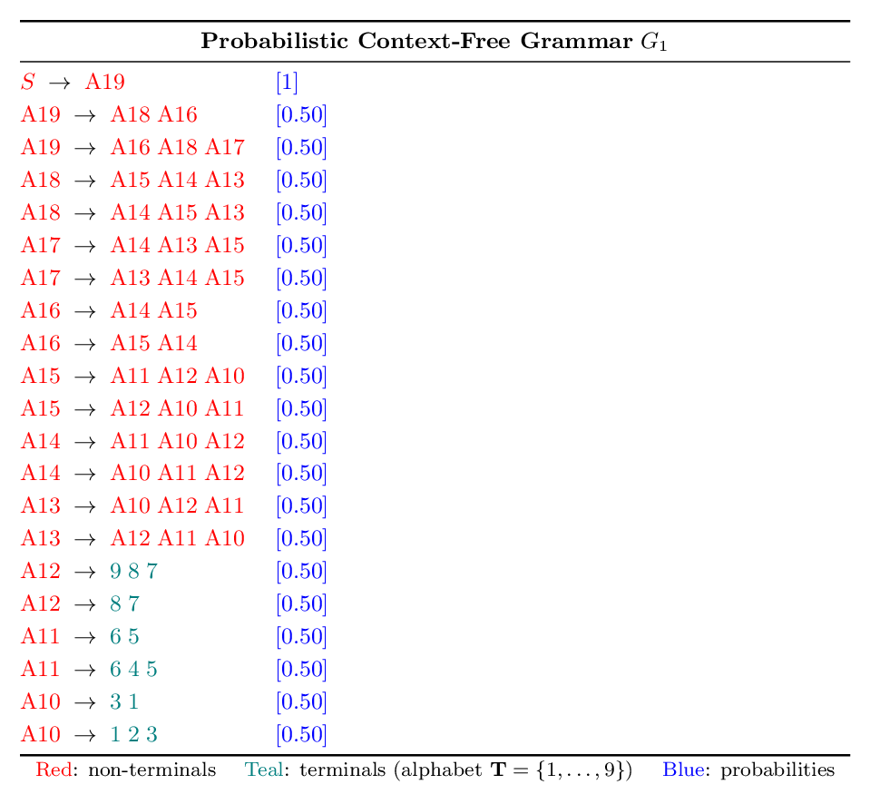
Figure 2a. A representative HPCFG $G_1$ with non-terminal symbols A10–A19 and alphabet $\mathbf{T} = \{1, \ldots, 9\}$. Strings are generated by recursively applying production rules from $S$ until only terminal tokens remain.
A sample string. Below is one string sampled from $G_1$, annotated with its parse derivation — showing the sequence of rule applications that produced the final token sequence.
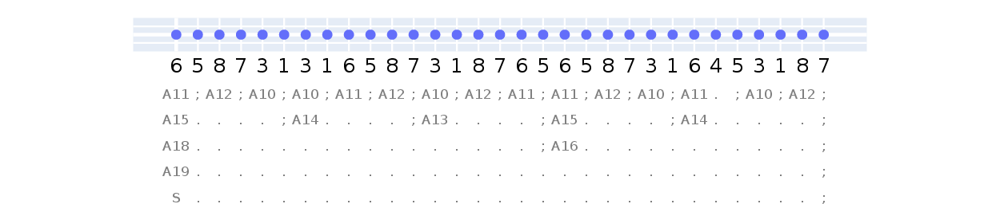
Figure 2b. A string from language $L_1$, annotated with its parse derivation. The generation probability is the product of all rule probabilities applied — here $(0.5)^{23}$.
We experiment with six languages derived from two distinct HPCFGs and three alphabet sets, with training sizes ranging from 1 to 1024 strings and 1024 test strings per language.
How can we measure the language proficiency of an LLM. Today most proficiency tests are generative, considering strings inside the language. But, the generative approach — measuring generation loss on in-language strings — is not directly comparable across FT and ICL, because the two modes differ in both input format and model parameters, introducing confounding factors that prevent a direct numerical comparison.
We introduce a discriminative test: instead of asking how likely the model is to generate an in-language string, we ask whether the model assigns lower loss to in-language strings than to close yet grammatically incorrect out-of-language strings. This yields a classification score (AUC) that is comparable across models, learning modes, and prompt formats — since the same model parameters are used to score both string types under identical conditions.
The figure below illustrates the underlying intuition. In-language strings (green) are surrounded by out-of-language strings at increasing edit distances. The discriminative test is most stringent at edit distance 1, where the two classes are hardest to separate.
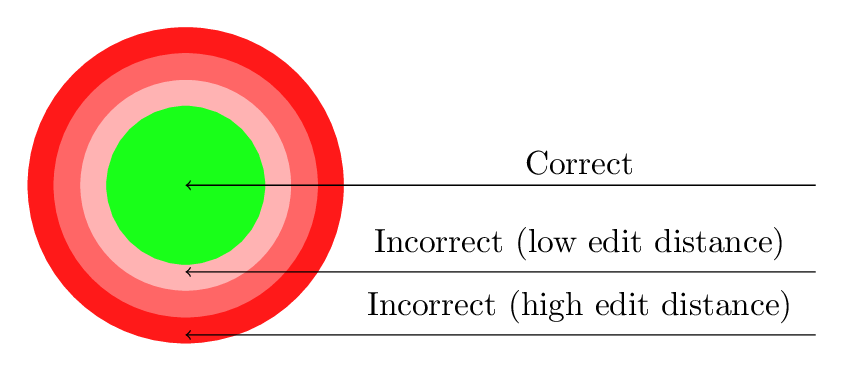
Figure 3. String hierarchy. The green region contains grammatically correct in-language strings; surrounding red rings contain out-of-language strings of increasing edit distance. The generative test evaluates only within the green region; the discriminative test evaluates relative performance across the boundary.
|
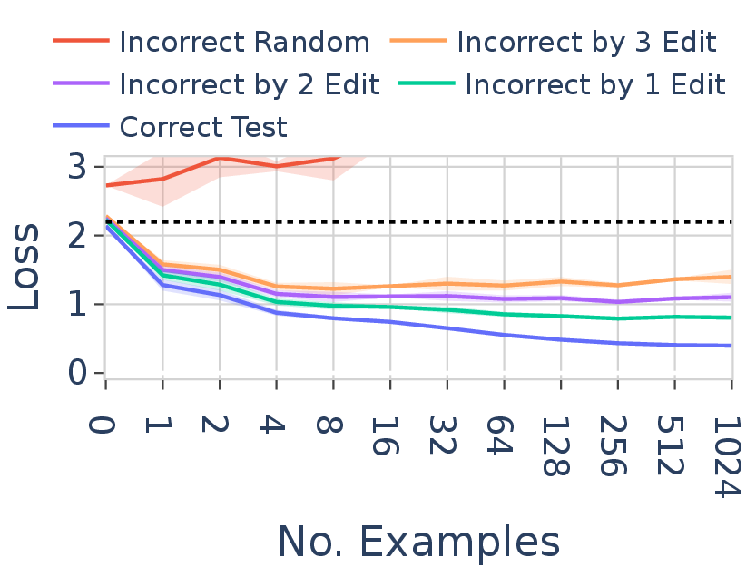 Generative test |
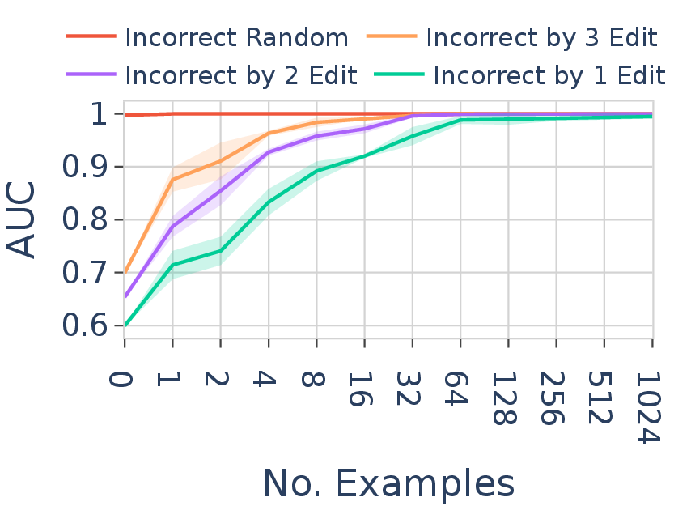 Discriminative test |
Figure 4. Generative test (left) and discriminative test (right) for FT in Mistral-7B on language $L_1$. The generative test measures raw generation loss on in-language strings; the discriminative test measures AUC when classifying in-language vs. out-of-language strings at increasing edit distances. The discriminative AUC is comparable across learning modes; the raw loss is not.
We experiment with 18 open-source LLMs from 6 model families (Qwen, Mistral, LLaMA, Gemma, Pythia, OPT), ranging from 0.5B to 13B parameters. Our key findings are as follows.
All LLMs converge to a similar optimal FT performance, regardless of model size or family. ICL performance, by contrast, varies substantially across models. Model size contributes to improved ICL performance but not to FT. Notably, within the same model family, two versions can demonstrate substantially different ICL abilities.
|
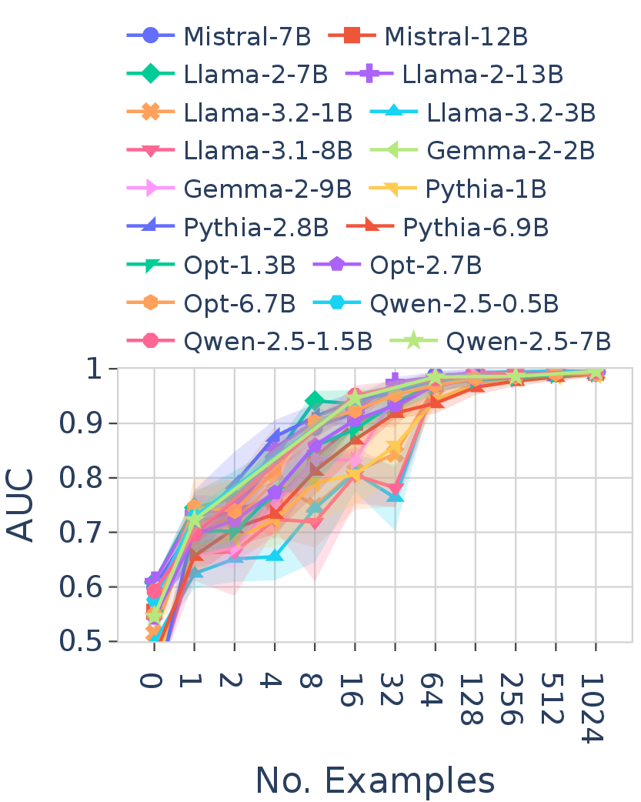 Fine-tuning (FT) |
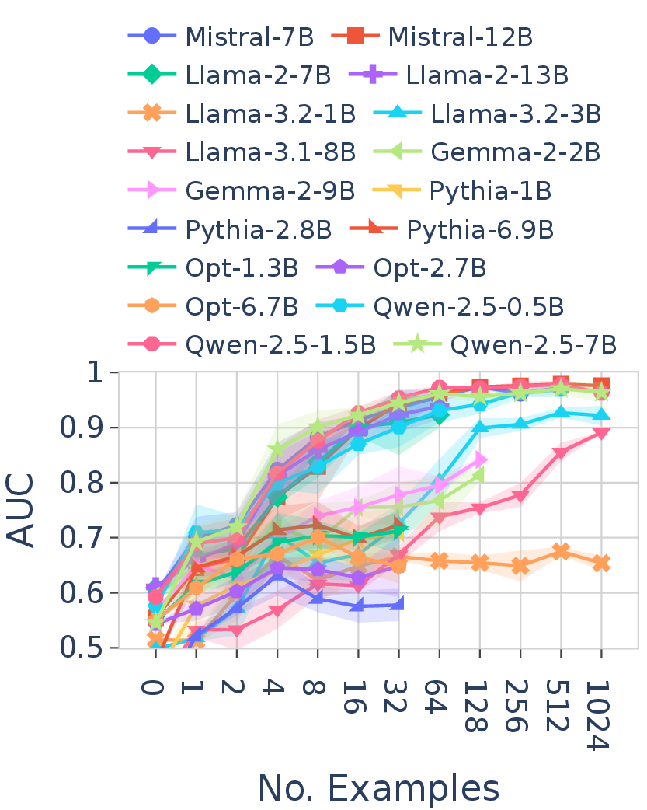 In-context Learning (ICL) |
Figure 5. Discriminative AUC of FT (left) and ICL (right) across all 18 LLMs on language $L_1$. All models converge to a similar optimal FT performance, while ICL performance varies substantially across models.
On in-distribution tasks — where training and test strings come from the same language — FT dominates ICL across most models. On out-of-distribution tasks — where test strings come from a related but distinct language — both modes perform comparably, and generalization is limited to languages close to the training language.
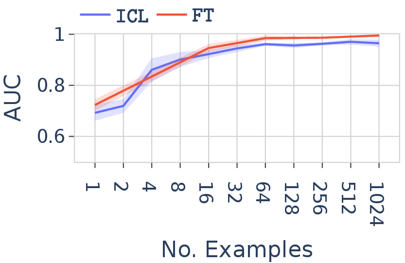
Figure 6. FT vs. ICL discriminative AUC on language $L_1$ (in-distribution generalization) in Qwen-2.5-7B.
We measure inductive bias via the correlation of generation probabilities that FT and ICL assign to the same strings. When both modes have only partially learned the language, their inductive biases are closely aligned. As the number of examples increases and proficiency improves, the correlation decreases — the two modes develop increasingly different internal representations of the language.
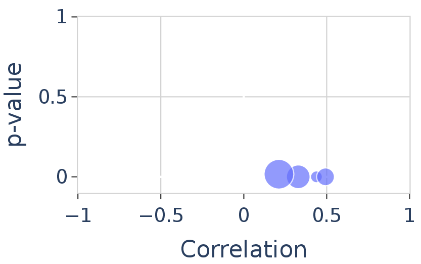
Figure 7. Inductive bias of FT and ICL in Qwen-2.5-7B, measured as Pearson correlation of generation loss on identical test strings. Marker size increases with training set size. Correlation is positive but decreases as both modes learn more.
FT performance is robust across languages sharing the same grammar but different alphabet sets. ICL performance, by contrast, is significantly affected by the specific tokens used, even when the underlying grammar rules are identical. This indicates that ICL is more tightly coupled to a model's pre-training token distribution, while FT can override this prior through parameter updates.
|
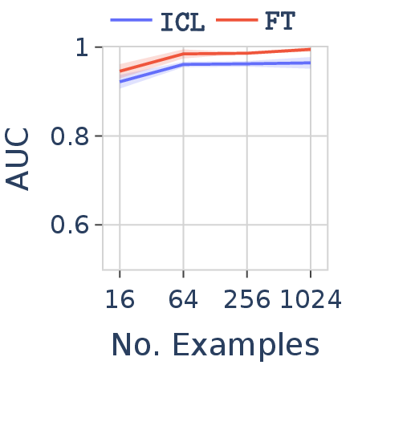 Numerical |
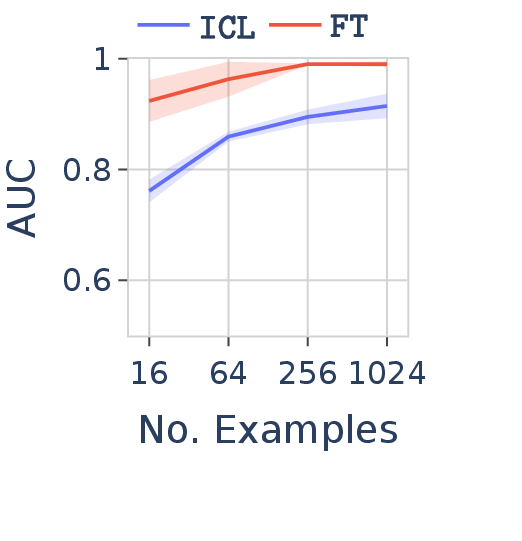 Latin |
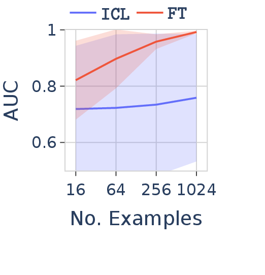 Under-trained tokens |
Figure 8. FT vs. ICL in Qwen-2.5-7B on the same grammar but with three different alphabets. FT remains robust across all three; ICL performance degrades significantly on under-trained tokens (tokens rarely seen during pre-training).
Many of these findings are difficult to reproduce with natural language datasets due to data contamination, imprecise notions of in-distribution vs. out-of-distribution, and ill-defined language boundaries. Formal language learning provides a controlled setting in which these factors can be precisely regulated.
We propose that synthetic formal languages should serve as a standard benchmark for studying LLM learning modes, enabling rigorous study of behaviors that are difficult to isolate in natural language settings. Source code is available at github.com/bishwamittra/formallm.